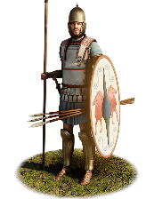
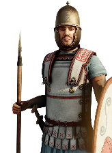

RTR: Imperium Surrectum
RTR: Imperium SurrectumEtruscan Thureophoroi


Class: spearmen · Category: infantry · Men per unit: 40
Description
"The second class was drawn up out of those whose rating was under ten thousand drachmae but not less than seventy-five minae. He ordered them to wear the same armour as those of the first class, except that he took from them the corslets, and instead of the bucklers gave them shields." – Dionysius of Halicarnassus (Roman Antiquities 4.16.3)
The Thureophoroi stand above the levied masses of Etruria, they are ready to defend their homeland and strike down their enemies in honour of their God Voltumna. These men possess greater personal wealth than the common spearmen and provide a heavier line infantry to the Etruscan army, being capable of engaging the younger, lighter ranks of Roman legions (hastati) and Gallic warbands on equal terms, but struggling against more heavily armoured enemies. They enter battle holding large oval thureos shields featuring central barleycorn spines, their legs being protected by bronze greaves, and their heads fitted with bronze Montefortino, "Etrusco-Thracian", or crested Attic-Phrygian helmets. While some of these men cannot afford any further armour, the wealthier part of this class has bought linen armour or muscle cuirasses for improved protection against enemy strikes. Offensively, they are armed with bundles of throwing javelins, thrusting spears, and (in RIS purely symbolic) sidearm swords worn on the right. Their improved panoply gives them a much better capacity to absorb enemy charges and withstand missile fire, or while holding the line during hand-to-hand combat.
Historical background
By the Hellenistic Period, the Etruscans had become confined to the region of Etruria itself. Rome had crushed the Etruscans in a brief war in 310-308 BC, and imposed a thirty year “treaty” upon them. In 302 BC the Romans intervened to keep the Etruscan family Cilnii in power at Arretium, from where they had been expelled. The alliance of Cisalpine Gauls and Samnites against Rome in 299-295 BC tempted the Etruscans to once more fight Rome; this anti-Roman coalition was decisively defeated at the battle of Sentinum (Liv. 5.31, 9.41, 10.37).
Between 295 and 292 BC the cities of Etruria were reduced to ashes and pacified by Rome, and once more the Etruscan cities had treaties imposed upon them. The Etruscan cities of Vulci and Volsinii once more revolted, however, joining the Gallic Boii against Rome in 282 and 281 BC, but were defeated. In 281-280 BC the Romans reduced Vulci and Volsinii; they may have been in communication with King Pyrrhos and Tarentum in southern Italy but were defeated in time (280 BC) for Rome to avoid a two-front war. In 274 or 273 BC the Roman’s nearest Etruscan neighbour, Caere, with whom they had enjoyed a special relationship of hospitium for over a hundred years, was called upon to surrender half of its land and was incorporated as a municipium sine suffragio. The occasion for this action is not known, but as aggression is most unlikely at this juncture, it can only be supposed that this was an act of opportunism. The Romans may have sought to justify it on the basis of the treachery, true or alleged, of some elements during the war of 282-280 BC against Pyrrhos (Staveley, 'Rome and Italy in the early third century', in: Walbank et al., The Cambridge Ancient History VII.2 (2006), p. 429).
Etruscan independence appears to have been finally extinguished in 265 BC, when the consul M. Fulvius Flaccus successfully concluded a war with the Etruscan city of Volsinii. Flaccus celebrated a triumph on 1 November 264 BC. According to Zonaras (8.7.4–8), the city was razed to the ground and refounded at a new site with the surviving citizens (Calapà, 'Sacra Volsiniensia. Civic Religion in Volsinii after the Roman Conquest', in: TRAC (2013), pp. 37-48). The Etruscan cities remained loyal to Rome during the First Punic War, but in 241 BC the city of Falerii revolted; a double-consular army stormed the city and half its land was confiscated as ager publicus (state-owned land), its arms, goods and slaves were taken, and the inhabitants were forced to move to a new, indefensible site (Staveley (2006), p. 431).
Thereafter, the Etruscans remained loyal allies of Rome, supplying allied troops against the Gauls of the Po Valley in 225 BC (Polyb. 2.24.5). Hannibal certainly hoped that the Etruscans would join him, as part of his strategy of detaching the Italians from Rome. Clearly, Roman control over Etruria was not a certainty in the Second Punic War, and Rome felt the need to garrison two legions there throughout most of the Second Punic War. Despite that, Etruscan contingents still served alongside the legions against Hannibal, as Livy tells us about a cohort of Perusians (Perusia was one of the twelve confederate city-states of the Etruscan League) numbering 460 men reinforcing Casilinum (Liv. 23.17.11, 27.5).
The structure of central Italian infantry forces was historically organized around census classes that linked military equipment to wealth. In the Servian centuriate order recorded by Dionysius of Halicarnassus (4.16.3) and Livy (1.43.4), second-class recruits provided their own helmets, greaves, spears, and swords, adopting the large oblong shield (scutum or thureos) in place of the older, round hoplite aspis. During the 3rd and 2nd centuries BC, as Etruscan city-states served Rome as allied contingents (socii) obligated under the formula togatorum (a list maintained by the Romans for the purpose of determining the annual military contributions of the Italian allies – Baronowski, 'The "Formula Togatorum"', in: Historia 33-2 [1984]), troops of this socio-economic standing displayed a distinct "hybrid panoply" that incorporated elements of regional Etruscan, Celtic, and Hellenistic equipment with Roman military equipment (Taylor, 'Etruscan Identity and Service in the Roman Army: 300–100 B.C.E.', in: AJA 121-2 (2017), pp. 275–292). Indeed, Taylor tells us that ‘soldiers in Etruscan art of the third and second centuries BC present a gamut from alterity to hybridity to conformity, at least in terms of the visual representation of military gear, which can be roughly mapped onto a class spectrum’ (Taylor (2017), p. 288).
The visual and archaeological record of Middle Republican Etruria provides extensive evidence for this medium infantry class. A notable 3rd–2nd century BC bronze votive figurine from Telamon (Florence, Museo Archeologico Nazionale inv. 10646) portrays an unarmoured warrior wearing bronze greaves and an Attic-Phrygian helmet while holding a vertical-spined thureos and sword. A funerary stele from Castiglioncello (Museo Civico Archeologico di Rosignano Marittimo, inv. no. 78047 in Taylor, 2017, p. 287) captures this unit type in a very detailed way, showing the folds of the tunic, the greaves, Montefortino helmet, and the musculature of the leg. No trace of any sort of body armour is detectable on it, although the apparent absence of armour is not conclusive, since the scutum covers the whole torso of the soldier.
Similarly, terracotta votive statuettes from Caere housed in the Phoebe Hearst Museum (Taylor, (2017), p. 284), as well as a 3rd-century BC terracotta figurine (which was housed in Berlin, but went missing during World War II [Taylor, (2017), p. 284]), depict infantrymen with the hybrid panoply, using muscle cuirasses with Montefortino helmets and large oval thureos. On Roman victory monuments, such as the Pydna relief at Delphi (168 BC), Italian allied infantry are explicitly distinguished from citizen legionaries by their use of muscle cuirasses rather than mail shirts. Taylor tells us that ‘the monument likely uses mail to indicate citizen legionaries, while muscle cuirasses mark out Italian allies, given the important role that allied contingents played in this particular victory’ (Taylor (2017), p. 289).
Stats
| Rank in roster | Rank in roster | Rank in roster | Rank in roster | ||||||||
|---|---|---|---|---|---|---|---|---|---|---|---|
| Men per unit | 40 | ███······· 28% | Attack | 14 | ███████··· 72% | Charge bonus | 8 | ███······· 31% | Defence | 40 | ████████·· 75% |
| · armour | 7 | ████······ 42% | · defence skill | 28 | █████████· 86% | · shield | 5 | ██████···· 58% | Morale | 12 | ██████···· 58% |
| Discipline | normal | Training | highly_trained | Recruitment cost | 1,717 dn | ███······· 32% | Upkeep per turn | 628 dn | █████····· 49% | ||
| Turns to recruit | 2 |
Weapons
| Primary | Secondary | Primary | Secondary | Primary | Secondary | Primary | Secondary | ||||
|---|---|---|---|---|---|---|---|---|---|---|---|
| Attack | 14 | 12 | Charge bonus | 8 | 10 | Type | thrown · blade | melee · blade | Damage | piercing | piercing |
| Projectile | javelin | — | Range | 50 | — | Ammunition | 2 | — | Attributes | prec | light_spear · spear_bonus_8 |
| Min delay between blows | 25 | 25 |
Defence
| Primary | Secondary | Primary | Secondary | Primary | Secondary | Primary | Secondary | ||||
|---|---|---|---|---|---|---|---|---|---|---|---|
| Total | 40 | — | Armour | 7 | — | Defence skill | 28 | — | Shield | 5 | — |
| Material | leather | — |
Condition, terrain and upkeep
| Hit points | 1 · mount 6 | Ground: scrub / sand / forest / snow | 0 / -1 / -1 / -1 | Heat penalty | 1 | Charge distance | 30 |
| Fire delay | 0 | Food consumed (low / high) | 60 / 300 | Mass per man | 1.08 | Formation: close / loose | 1 x 1.2 / 2 x 2.4 · 5 ranks · square |
| Men per unit | 40 as the unit file states — the game multiplies this by your unit size |
In battle: Can sap · Very good stamina
The full attribute list (4)
sea_faring, hide_forest, can_sap, very_hardy
Who can recruit it
A core roster unit for one faction, which can raise it anywhere it holds the right building:
Any faction holding one of the provinces below can field it.
Exactly what a settlement must have, route by route (3)
| Building | Also requires | Building | Also requires | Building | Also requires | ||
|---|---|---|---|---|---|---|---|
| Direct Rule | Tier 2 Military Industrial Complex · Tier 1 Colony | Homeland | Garrison Building or Tier 1 Military Industrial Complex | Region Information Scroll | Tier 2 Military Industrial Complex · Etruscan area of recruitment · Dependency or Indirect Rule | Tier 1 Colony not built |
Areas of recruitment

| Zone | Provinces | ||||||
|---|---|---|---|---|---|---|---|
| Etruscan | 8 |